2025 Higher Mathematics - Paper 2 marking instructions
Source: Scottish Qualifications Authority (SQA) / Qualifications Scotland. This is a StemInteract HTML companion, not an official HTML edition. Selectable text is supplied alongside original page images. Use the images or original PDF for equations, powers, fractions, vector notation, tables and diagrams; text extraction cannot fully preserve mathematical layout.
Jump to a question
PDF page 1
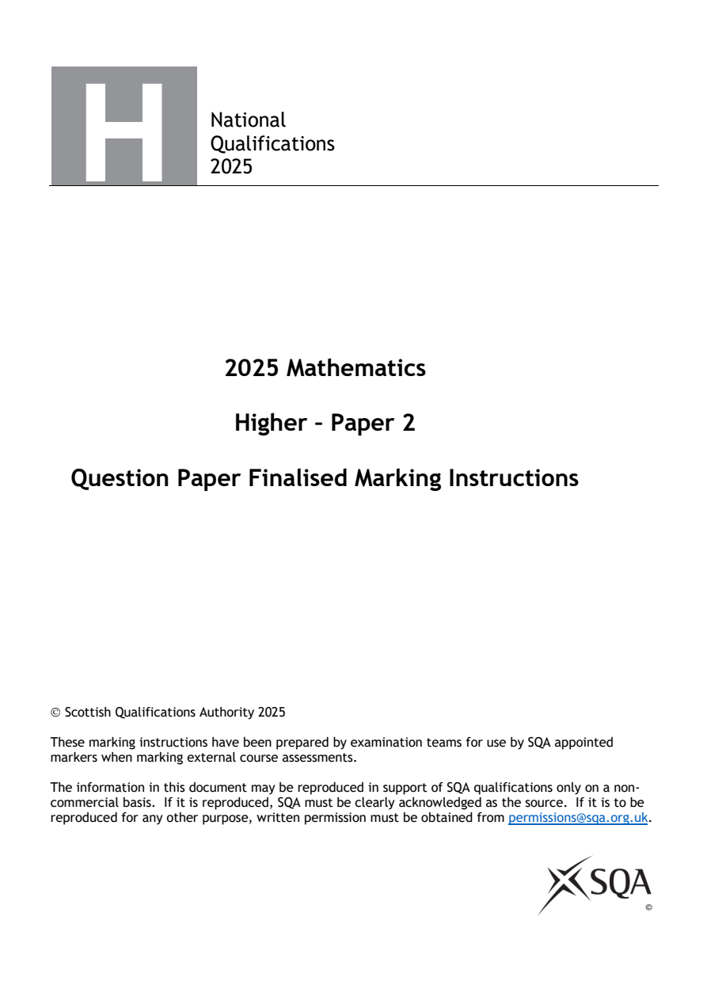
Selectable page text
National
Qualifications
2025
2025 Mathematics
Higher – Paper 2
Question Paper Finalised Marking Instructions
© Scottish Qualifications Authority 2025
These marking instructions have been prepared by examination teams for use by SQA appointed
markers when marking external course assessments.
The information in this document may be reproduced in support of SQA qualifications only on a non-
commercial basis. If it is reproduced, SQA must be clearly acknowledged as the source. If it is to be
reproduced for any other purpose, written permission must be obtained from permissions@sqa.org.uk.PDF page 2
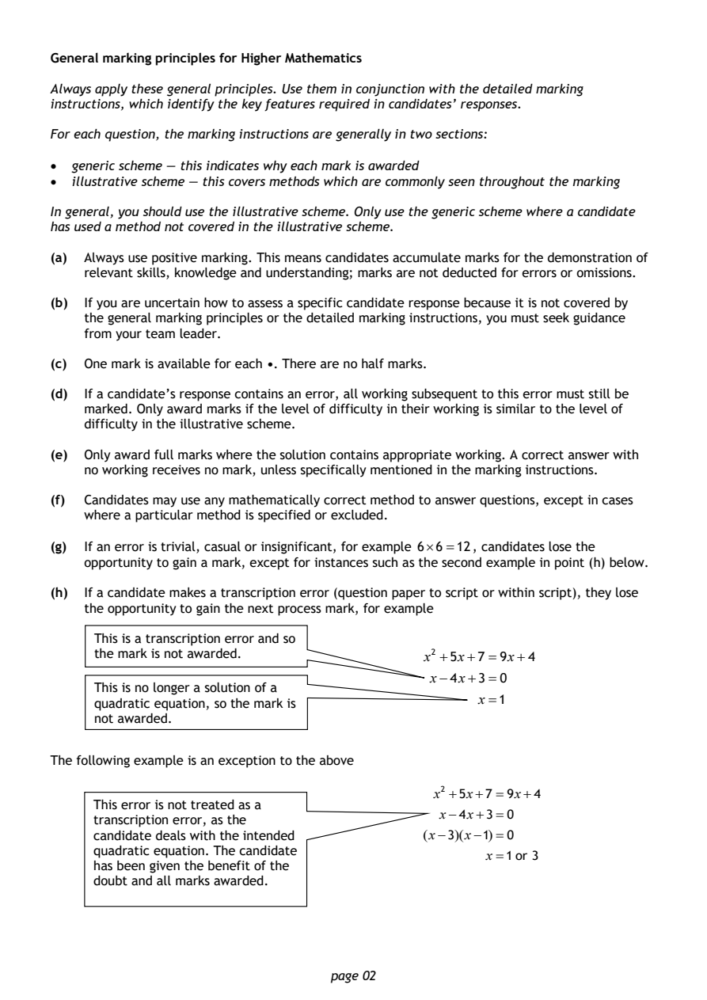
Selectable page text
General marking principles for Higher Mathematics
Always apply these general principles. Use them in conjunction with the detailed marking
instructions, which identify the key features required in candidates’ responses.
For each question, the marking instructions are generally in two sections:
• generic scheme — this indicates why each mark is awarded
• illustrative scheme — this covers methods which are commonly seen throughout the marking
In general, you should use the illustrative scheme. Only use the generic scheme where a candidate
has used a method not covered in the illustrative scheme.
(a) Always use positive marking. This means candidates accumulate marks for the demonstration of
relevant skills, knowledge and understanding; marks are not deducted for errors or omissions.
(b) If you are uncertain how to assess a specific candidate response because it is not covered by
the general marking principles or the detailed marking instructions, you must seek guidance
from your team leader.
(c) One mark is available for each •. There are no half marks.
(d) If a candidate’s response contains an error, all working subsequent to this error must still be
marked. Only award marks if the level of difficulty in their working is similar to the level of
difficulty in the illustrative scheme.
(e) Only award full marks where the solution contains appropriate working. A correct answer with
no working receives no mark, unless specifically mentioned in the marking instructions.
(f) Candidates may use any mathematically correct method to answer questions, except in cases
where a particular method is specified or excluded.
(g) If an error is trivial, casual or insignificant, for example 6×6 =12, candidates lose the
opportunity to gain a mark, except for instances such as the second example in point (h) below.
(h) If a candidate makes a transcription error (question paper to script or within script), they lose
the opportunity to gain the next process mark, for example
This is a transcription error and so
the mark is not awarded. x² +5x+7 =9x+4
x−4x+3=0
This is no longer a solution of a
x =1
quadratic equation, so the mark is
not a warded.
The following example is an exception to the above
x² +5x+7 =9x+4
This error is not treated as a
x−4x+3=0
transcript ion err or, as the
candidate deals with the intended (x−3)(x−1)=0
quadratic equation. The candidate
x=1 or 3
has been given the benefit of the
doubt and all marks awarded.
page 02PDF page 3
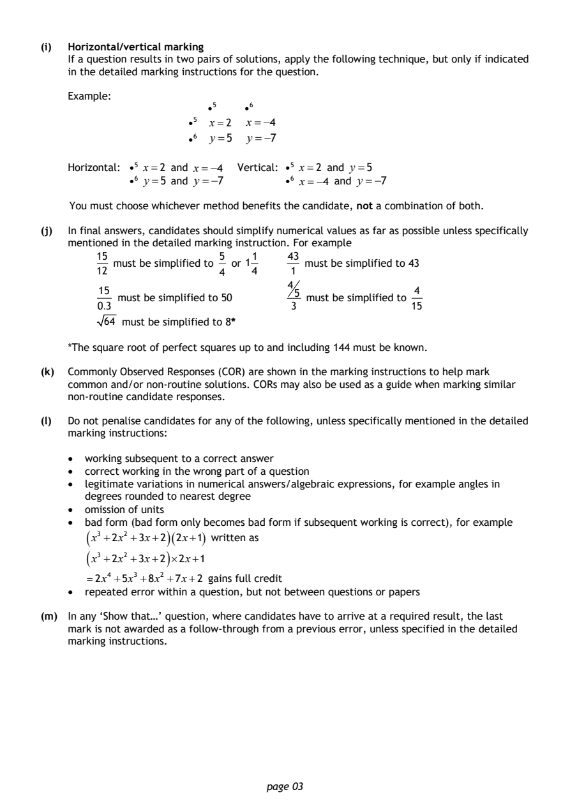
Selectable page text
(i) Horizontal/vertical marking
If a question results in two pairs of solutions, apply the following technique, but only if indicated
in the detailed marking instructions for the question.
Example:
•5 •6
•5 x =2 x=−4
•6 y=5 y=−7
Horizontal: •5 x =2 and x=−4 Vertical: •⁵ x =2 and y=5
•6 y=5 and y=−7 •6 x=−4 and y=−7
You must choose whichever method benefits the candidate, not a combination of both.
(j) In final answers, candidates should simplify numerical values as far as possible unless specifically
mentioned in the detailed marking instruction. For example
15 5 1 43
must be simplified to or 1 must be simplified to 43
12 4 4 1
4
15 5 4
must be simplified to 50 must be simplified to
0.3 3 15
64 must be simplified to 8*
*The square root of perfect squares up to and including 144 must be known.
(k) Commonly Observed Responses (COR) are shown in the marking instructions to help mark
common and/or non-routine solutions. CORs may also be used as a guide when marking similar
non-routine candidate responses.
(l) Do not penalise candidates for any of the following, unless specifically mentioned in the detailed
marking instructions:
• working subsequent to a correct answer
• correct working in the wrong part of a question
• legitimate variations in numerical answers/algebraic expressions, for example angles in
degrees rounded to nearest degree
• omission of units
• bad form (bad form only becomes bad form if subsequent working is correct), for example
(
x³ +2x² +3x+2
)(2x+1)
written as
( )
x³ +2x² +3x+2 ×2x+1
=2x⁴ +5x³ +8x² +7x+2 gains full credit
• repeated error within a question, but not between questions or papers
(m) In any ‘Show that…’ question, where candidates have to arrive at a required result, the last
mark is not awarded as a follow-through from a previous error, unless specified in the detailed
marking instructions.
page 03PDF page 4
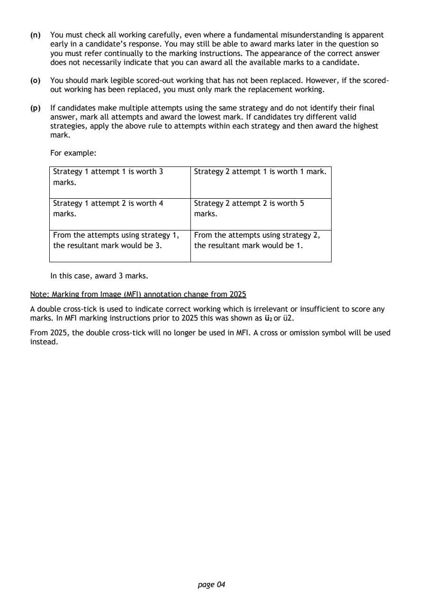
Selectable page text
(n) You must check all working carefully, even where a fundamental misunderstanding is apparent
early in a candidate’s response. You may still be able to award marks later in the question so
you must refer continually to the marking instructions. The appearance of the correct answer
does not necessarily indicate that you can award all the available marks to a candidate.
(o) You should mark legible scored-out working that has not been replaced. However, if the scored-
out working has been replaced, you must only mark the replacement working.
(p) If candidates make multiple attempts using the same strategy and do not identify their final
answer, mark all attempts and award the lowest mark. If candidates try different valid
strategies, apply the above rule to attempts within each strategy and then award the highest
mark.
For example:
Strategy 1 attempt 1 is worth 3 Strategy 2 attempt 1 is worth 1 mark.
marks.
Strategy 1 attempt 2 is worth 4 Strategy 2 attempt 2 is worth 5
marks. marks.
From the attempts using strategy 1, From the attempts using strategy 2,
the resultant mark would be 3. the resultant mark would be 1.
In this case, award 3 marks.
Note: Marking from Image (MFI) annotation change from 2025
A double cross-tick is used to indicate correct working which is irrelevant or insufficient to score any
marks. In MFI marking instructions prior to 2025 this was shown as ü or ü2.
2
From 2025, the double cross-tick will no longer be used in MFI. A cross or omission symbol will be used
instead.
page 04PDF page 5
Paper 2, Question 1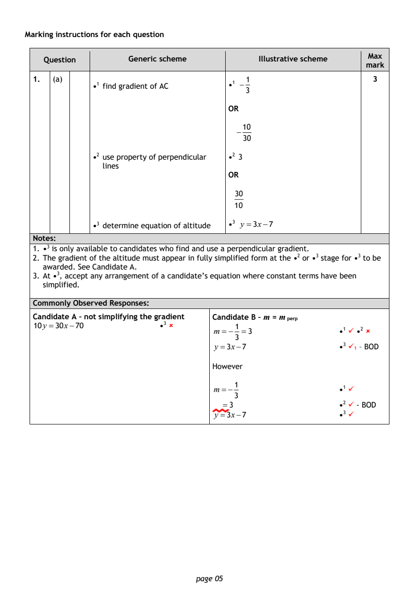
Selectable page text
Marking instructions for each question
Max
Question Generic scheme Illustrative scheme
mark
1. (a) 1 3
•1 find gradient of AC •1 −
3
OR
10
−
30
•2 use property of perpendicular •2 3
lines
OR
30
10
•3 determine equation of altitude •3 y =3x−7
Notes:
1. •³ is only available to candidates who find and use a perpendicular gradient.
2. The gradient of the altitude must appear in fully simplified form at the •² or •³ stage for •³ to be
awarded. See Candidate A.
3. At •³, accept any arrangement of a candidate’s equation where constant terms have been
simplified.
Commonly Observed Responses:
Candidate A – not simplifying the gra₃dient Candidate B – m = m
perp
10y=30x−70 • 1
m=− =3 •1 ✓ •2
3
y=3x−7 •3 ✓ – BOD
1
However
1
m=− •1 ✓
3
=3 •2 ✓ - BOD
y=3x−7 •3 ✓
page 05PDF page 6
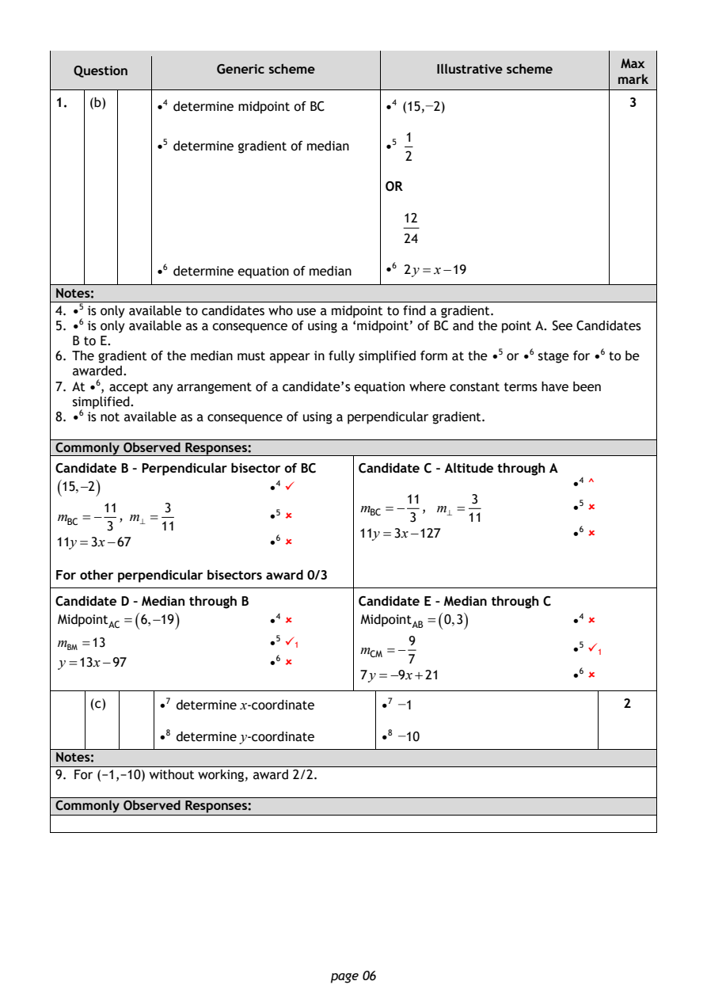
Selectable page text
Max
Question Generic scheme Illustrative scheme
mark
1. (b) •4 determine midpoint of BC •4 (15,−2) 3
1
•5 determine gradient of median •5
2
OR
12
24
•6 determine equation of median •6 2y= x−19
Notes:
4. •⁵ is only available to candidates who use a midpoint to find a gradient.
5. •⁶ is only available as a consequence of using a ‘midpoint’ of BC and the point A. See Candidates
B to E.
6. The gradient of the median must appear in fully simplified form at the •⁵ or •⁶ stage for •⁶ to be
awarded.
7. At •⁶, accept any arrangement of a candidate’s equation where constant terms have been
si₆mplified.
8. • is not available as a consequence of using a perpendicular gradient.
Commonly Observed Responses:
Candidate B – Perpendicular bisector of BC Candidate C – Altitude through A
(15,−2) •4 ✓ •4 ^
11 3
11 3 m_{B}_{C} =− , m_{⊥} = •5
m_{B}_{C} =− , m_{⊥} = •5 3 11
3 11
11y=3x−127 •6
11y=3x−67 •6
For other perpendicular bisectors award 0/3
Candidate D – Median through B Candidate E – Median through C
Midpoint_{A}_{C} =(6,−19) •4 Midpoint_{A}_{B} =(0,3) •4
m_{B}_{M} =13 •5 ✓ 9
1 m_{C}_{M} =− •5 ✓
1
y=13x−97 •6 7
7y=−9x+21 •6
(c) •7 determine x-coordinate •7 −1 2
•8 determine y-coordinate •8 −10
Notes:
9. For (−1,−10) without working, award 2/2.
Commonly Observed Responses:
page 06PDF page 7
Paper 2, Question 2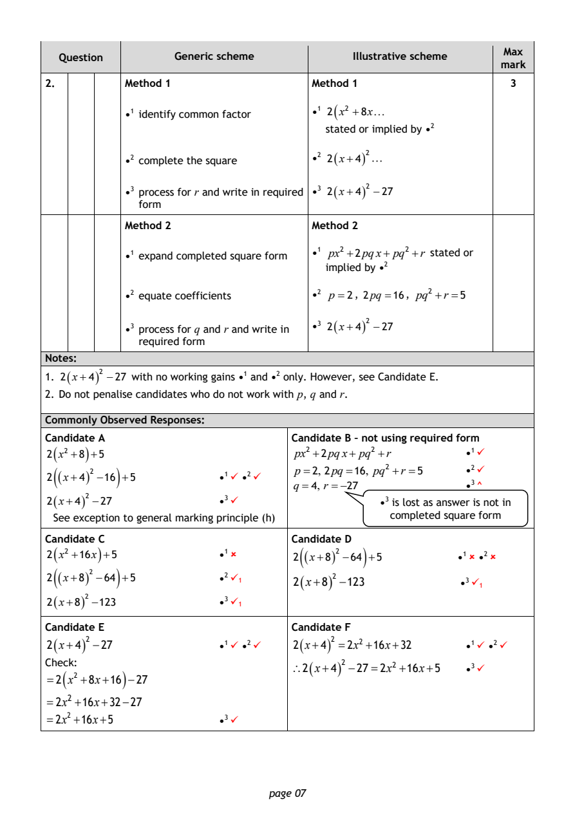
Selectable page text
Max
Question Generic scheme Illustrative scheme
mark
2. Method 1 Method 1 3
•1 identify common factor •1 2 ( x² +8x…
stated or implied by •²
•2 complete the square •2 2(x+4)²
•3 process for r and write in required •³ 2(x+4)² −27
form
Method 2 Method 2
•1 expand completed square form •1 px² +2pqx+ pq² +r stated or
implied by •²
•2 equate coefficients •2 p =2, 2pq =16, pq² +r =5
•3 process for q and r and write in •3 2(x+4)² −27
required form
Notes:
1. 2(x+4)² −27 with no working gains •¹ and •² only. However, see Candidate E.
2. Do not penalise candidates who do not work with p, q and r.
Commonly Observed Responses:
Candidate A Candidate B – not using required form
2 ( x² +8 ) +5 px² +2pqx+ pq² +r •1 ✓
( ) p=2, 2pq=16, pq² +r =5 •2 ✓
2 (x+4)² −16 +5 •1 ✓ •2 ✓
q=4, r =−27 •3 ^
2(x+4)² −27 •3 ✓ •3 is lost as answer is not in
completed square form
See exception to general marking principle (h)
Candidate C Candidate D
2 ( x² +16x ) +5 •1 2 ( (x+8)² −64 ) +5 •1 •2
( )
2 (x+8)² −64 +5 •2 ✓ 1 2(x+8)² −123 •3 ✓
1
2(x+8)² −123 •3 ✓
1
Candidate E Candidate F
2(x+4)² −27 •1 ✓ •2 ✓ 2(x+4)² =2x² +16x+32 •1 ✓ •2 ✓
Check: ∴2(x+4)² −27=2x² +16x+5 •3 ✓
( )
=2 x² +8x+16 −27
=2x² +16x+32−27
=2x² +16x+5 •3 ✓
page 07PDF page 8
Paper 2, Question 3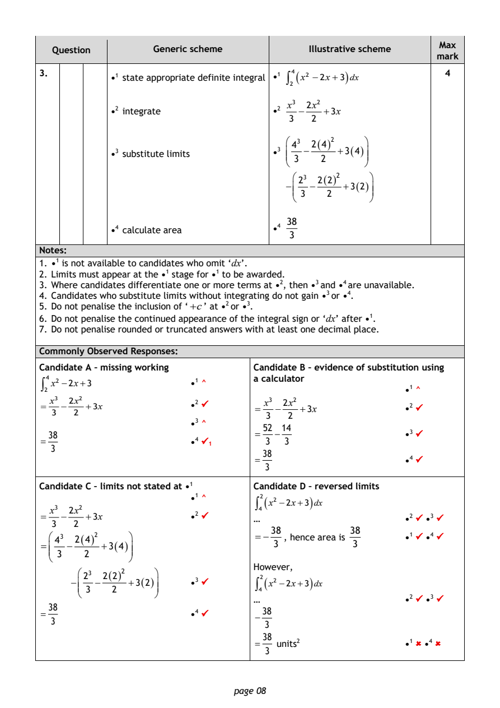
Selectable page text
Max
Question Generic scheme Illustrative scheme
mark
3. •1 state appropriate definite integral •¹ ∫ 4( x² −2x+3 ) dx 4
2
x³ 2x²
•2 integrate •2 − +3x
3 2
4³ 2(4)²
•3 substitute limits •3 3 − 2 +3(4)
2³ 2(2)²
− − +3(2)
3 2
38
•4 calculate area •4
3
Notes:
1. •¹ is not available to candidates who omit ‘dx’.
2. Limits must appear at the •¹ stage for •¹ to be awarded.
3. Where candidates differentiate one or more terms at •², then •³ and •⁴ are unavailable.
4. Candidates who substitute limits without integrating do not gain •³ or •⁴.
5. Do not penalise the inclusion of ‘+c’ at •² or •³.
6. Do not penalise the continued appearance of the integral sign or ‘dx’ after •¹.
7. Do not penalise rounded or truncated answers with at least one decimal place.
Commonly Observed Responses:
Candidate A – missing working Candidate B – evidence of substitution using
4 a calculator
∫ x² −2x+3 •1 ^
2 •1 ^
= x³ − 2x² +3x •2 ✓ = x³ − 2x² +3x •2 ✓
3 2
3 2
•3 ^
52 14
38 = − •3 ✓
= •4 ✓ 3 3
1
3
38
= •4 ✓
3
Candidate C – limits not stated at •¹ Candidate D – reversed limits
•1 ^ ∫ 2( x² −2x+3 ) dx
x³ 2x² 4
= − +3x •2 ✓ … •2 ✓ •3 ✓
3 2
38 38
4³ 2(4)² =− , hence area is •1 ✓ •4 ✓
= − +3(4) 3 3
3 2
However,
2³ 2(2)²
− − +3(2) •3 ✓ ∫ 2( x² −2x+3 ) dx
3 2 4
… •2 ✓ •3 ✓
38
= •4 ✓ 38
−
3
3
38
= units² •1 •4
3
page 08PDF page 9
Paper 2, Question 4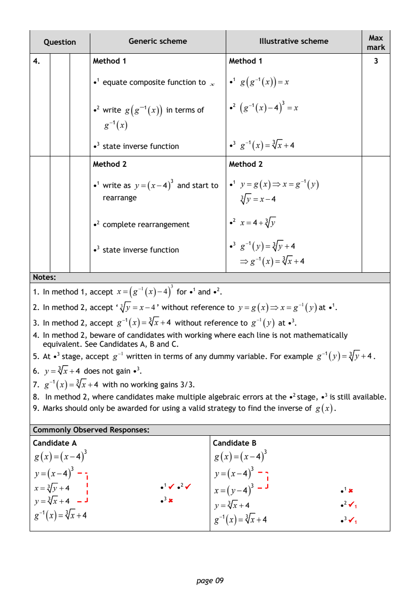
Selectable page text
Max
Question Generic scheme Illustrative scheme
mark
4. Method 1 Method 1 3
•1 equate composite function to ₓ •1 g ( g⁻¹(x)) = x
•2 write g ( g − ¹(x)) in terms of •2 ( g⁻¹(x)−4 ) ³ = x
g⁻¹(x)
•3 state inverse function •3 g⁻¹(x)= ³ x +4
Method 2 Method 2
•1 write as y=(x−4)³ and start to •1 y = g(x)⇒ x= g⁻¹(y)
rearrange 3 y = x−4
•2 complete rearrangement •2 x=4+³ y
•3 g⁻¹(y)= ³ y +4
•3 state inverse function
⇒ g⁻¹(x)= ³ x +4
Notes:
1. In method 1, accept x= ( g⁻¹(x)−4 ) ³ for •¹ and •².
2. In method 2, accept ‘³ y = x−4’ without reference to y = g(x)⇒ x= g⁻¹(y)at •¹.
3. In method 2, accept g⁻¹(x)= ³ x +4 without reference to g⁻¹(y) at •³.
4. In method 2, beware of candidates with working where each line is not mathematically
equivalent. See Candidates A, B and C.
5. At •³ stage, accept g⁻¹ written in terms of any dummy variable. For example g⁻¹(y)= ³ y +4.
6. y= ³ x+4 does not gain •³.
7. g⁻¹(x)= ³ x +4 with no working gains 3/3.
8. In method 2, where candidates make multiple algebraic errors at the •² stage, •³ is still available.
9. Marks should only be awarded for using a valid strategy to find the inverse of g(x).
Commonly Observed Responses:
Candidate A Candidate B
g(x)=(x−4)³ g(x)=(x−4)³
y =(x−4)³ y =(x−4)³
x= ³ y +4 •1 ✓ •2 ✓ x=(y−4)³ •1
y= ³ x+4 •3
y= ³ x+4 •2 ✓
1
g⁻¹(x)= ³ x +4
g⁻¹(x)= ³ x +4 •3 ✓
1
page 09PDF page 10
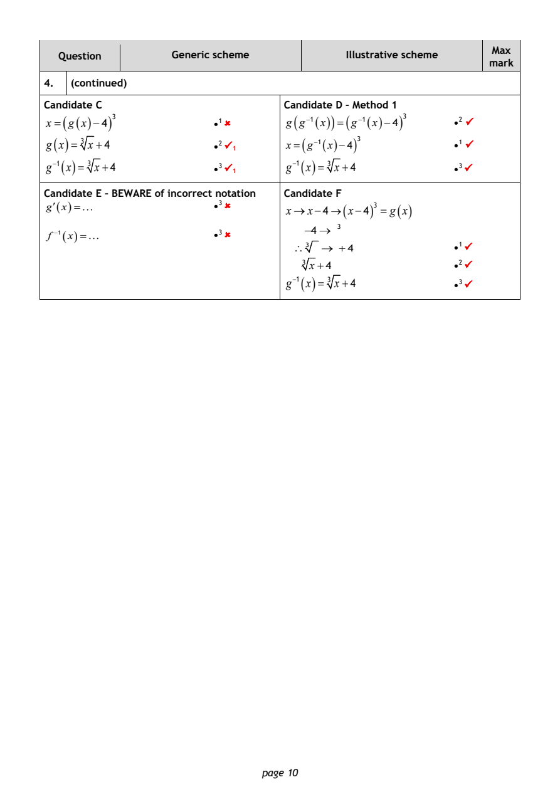
Selectable page text
Max
Question Generic scheme Illustrative scheme
mark
4. (continued)
Candidate C Candidate D – Method 1
x= ( g(x)−4 ) ³ •1 g ( g⁻¹(x)) = ( g⁻¹(x)−4 ) ³ •2 ✓
g(x)= ³ x +4 •2 ✓ x= ( g⁻¹(x)−4 ) ³ •1 ✓
1
g⁻¹(x)= ³ x +4 •3 ✓ g⁻¹(x)= ³ x +4 •3 ✓
1
Candidate E – BEWARE of incorrect notation Candidate F
g′(x)= •3 x→x−4→ (x−4)³ = g(x)
−4→ 3
f ⁻¹(x)=… •3
∴3 → +4 •1 ✓
3 x+4 •2 ✓
g⁻¹(x)= ³ x +4 •3 ✓
page 10PDF page 11
Paper 2, Question 5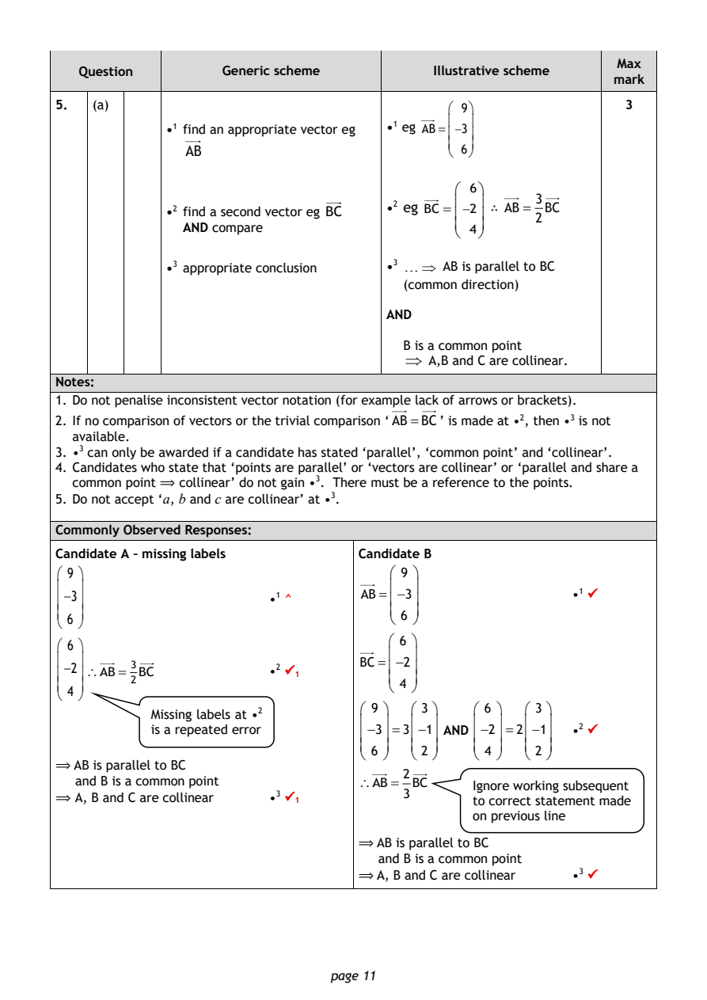
Selectable page text
Max
Question Generic scheme Illustrative scheme
mark
5. (a) 9 3
•1 find an appropriate vector eg •1 eg AB= −3
AB 6
6
3
•2 find a second vector eg BC •2 eg BC = −2 ∴ AB= 2 BC
AND compare 4
•3 appropriate conclusion •3 …⇒ AB is parallel to BC
(common direction)
AND
B is a common point
⇒ A,B and C are collinear.
Notes:
1. Do not penalise inconsistent vector notation (for example lack of arrows or brackets).
2. If no comparison of vectors or the trivial comparison ‘AB=BC’ is made at •², then •³ is not
a₃vailable.
3. • can only be awarded if a candidate has stated ‘parallel’, ‘common point’ and ‘collinear’.
4. Candidates who state that ‘points are parallel’ or ‘vectors are collinear’ or ‘parallel and share a
common point ⟹ collinear’ do not gain •³. There must be a reference to the points.
5. Do not accept ‘a, b and c are collinear’ at •³.
Commonly Observed Responses:
Candidate A – missing labels Candidate B
9 9
−3 •1 ^ AB= −3 •1 ✓
6 6
6
6
BC= −2
−2 ∴AB= ³₂BC •2 ✓ 1
4
4
9 3 6 3
Missing labels at •²
is a repeated error
−3
=3
−1
AND
−2
=2
−1
•2 ✓
6
2
4
2
⟹ AB is parallel to BC
2
and B is a common point ∴AB= BC Ignore working subsequent
⟹ A, B and C are collinear •3 ✓ 1 3 to correct statement made
on previous line
⟹ AB is parallel to BC
and B is a common point
⟹ A, B and C are collinear •3 ✓
page 11PDF page 12
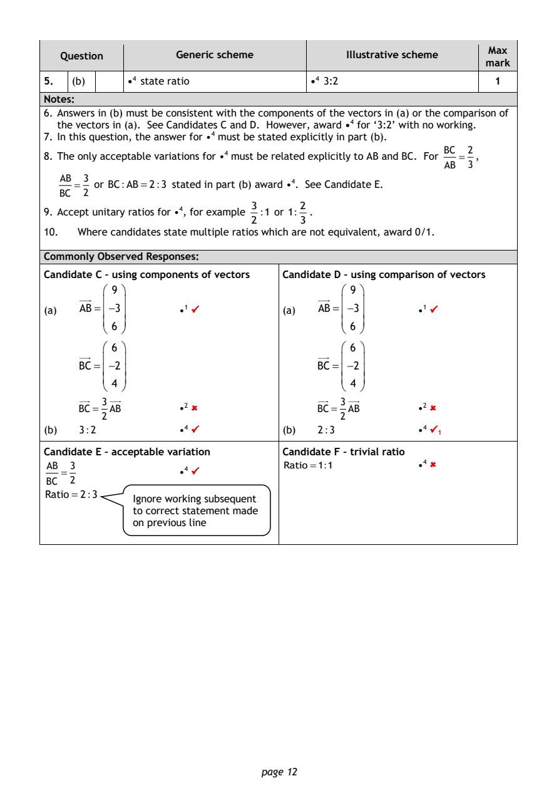
Selectable page text
Max
Question Generic scheme Illustrative scheme
mark
5. (b) •4 state ratio •4 3:2 1
Notes:
6. Answers in (b) must be consistent with the components of the vectors in (a) or the comparison of
the vectors in (a). See Candidates C and D. However, award •⁴ for ‘3:2’ with no working.
7. In this question, the answer for •⁴ must be stated explicitly in part (b).
BC 2
8. The only acceptable variations for •⁴ must be related explicitly to AB and BC. For = ,
AB 3
AB 3
= or BC:AB=2:3 stated in part (b) award •⁴. See Candidate E.
BC 2
3 2
9. Accept unitary ratios for •⁴, for example :1 or 1: .
2 3
10. Where candidates state multiple ratios which are not equivalent, award 0/1.
Commonly Observed Responses:
Candidate C – using components of vectors Candidate D – using comparison of vectors
9 9
(a) AB= −3 •1 ✓ (a) AB= −3 •1 ✓
6 6
6 6
BC=
−2
BC=
−2
4 4
3 3
BC= AB •2 BC= AB •2
2 2
(b) 3:2 •4 ✓ (b) 2:3 •4 ✓
1
Candidate E – acceptable variation Candidate F – trivial ratio
AB 3 Ratio=1:1 •4
= •4 ✓
BC 2
Ratio=2:3
Ignore working subsequent
to correct statement made
on previous line
page 12PDF page 13
Paper 2, Question 6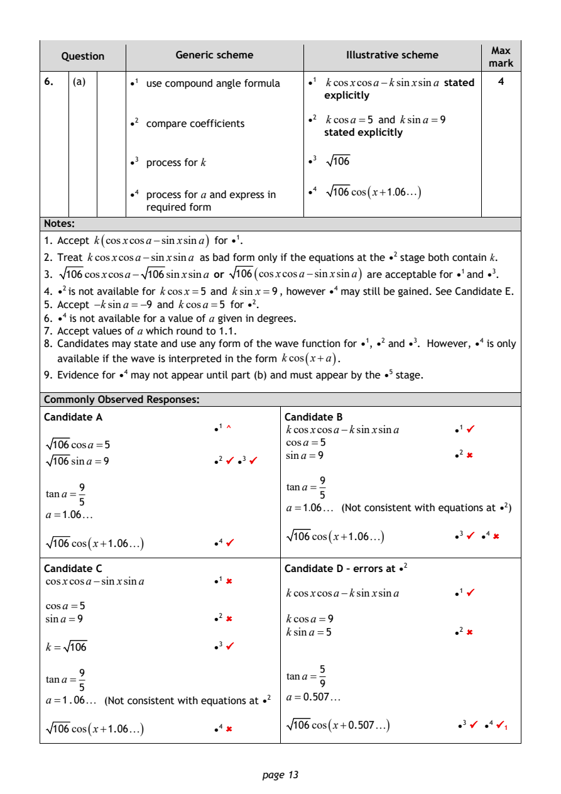
Selectable page text
Max
Question Generic scheme Illustrative scheme
mark
6. (a) •1 use compound angle formula •1 kcosxcosa−ksinxsina stated 4
explicitly
•2 compare coefficients •2 kcosa=5 and ksina =9
stated explicitly
•3 process for k •3 106
•4 process for a and express in •4 106cos(x+1.06 )
required form
Notes:
1. Accept k(cosxcosa−sinxsina) for •¹.
2. Treat kcosxcosa−sinxsina as bad form only if the equations at the •² stage both contain k.
3. 106cosxcosa− 106sinxsina or 106(cosxcosa−sinxsina) are acceptable for •¹ and •³.
4. •² is not available for kcosx=5 and ksinx=9, however •⁴ may still be gained. See Candidate E.
5. Accept −ksina=−9 and kcosa=5 for •².
6. •⁴ is not available for a value of a given in degrees.
7. Accept values of a which round to 1.1.
8. Candidates may state and use any form of the wave function for •¹, •2 and •³. However, •⁴ is only
available if the wave is interpreted in the form kcos(x+a).
9. Evidence for •⁴ may not appear until part (b) and must appear by the •⁵ stage.
Commonly Observed Responses:
Candidate A Candidate B
•1 ^ kcosxcosa−ksinxsina •1 ✓
106cosa=5 cosa=5
sina=9 •2
106sina =9 •2 ✓ •3 ✓
9
9 tana=
tana= 5
5
a=1.06… (Not consistent with equations at •²)
a=1.06…
106cos(x+1.06…) •3 ✓ •4
106cos(x+1.06…) •4 ✓
Candidate C Candidate D – errors at •²
cosxcosa−sinxsina •1
kcosxcosa−ksinxsina •1 ✓
cosa=5
sina=9 •2 kcosa=9
ksina =5 •2
k = 106 •3 ✓
5
9 tana=
tana=
9
5
a =1.06… (Not consistent with equations at •²
a=0.507…
106cos(x+1.06…) •4 106cos(x+0.507…) •3 ✓ •4 ✓ 1
page 13PDF page 14
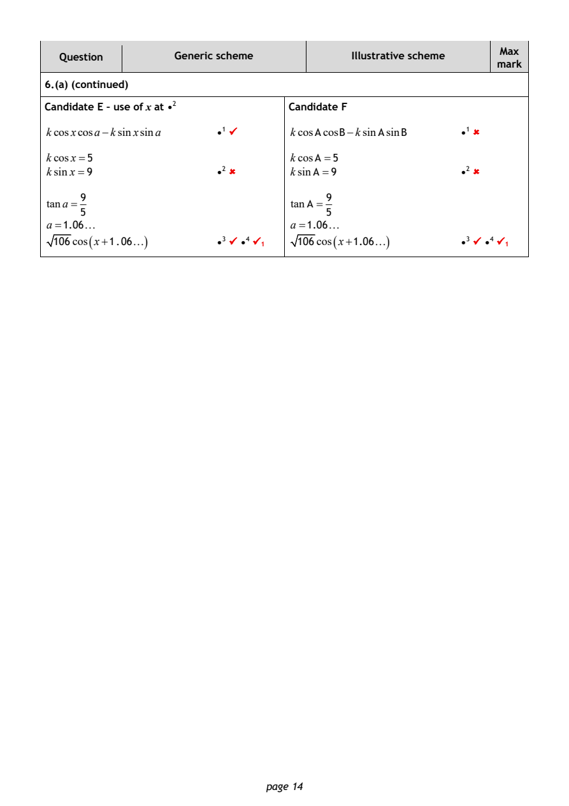
Selectable page text
Max
Question Generic scheme Illustrative scheme
mark
6.(a) (continued)
Candidate E – use of x at •² Candidate F
kcosxcosa−ksinxsina •1 ✓ kcosAcosB−ksinAsinB •1
kcosx=5 kcosA =5
ksinx=9 •2 ksinA =9 •2
9 9
tana= tanA =
5 5
a =1.06… a =1.06…
106cos(x+1.06…) •3 ✓ •4 ✓ 106cos(x+1.06…) •3 ✓ •4 ✓
1 1
page 14PDF page 15
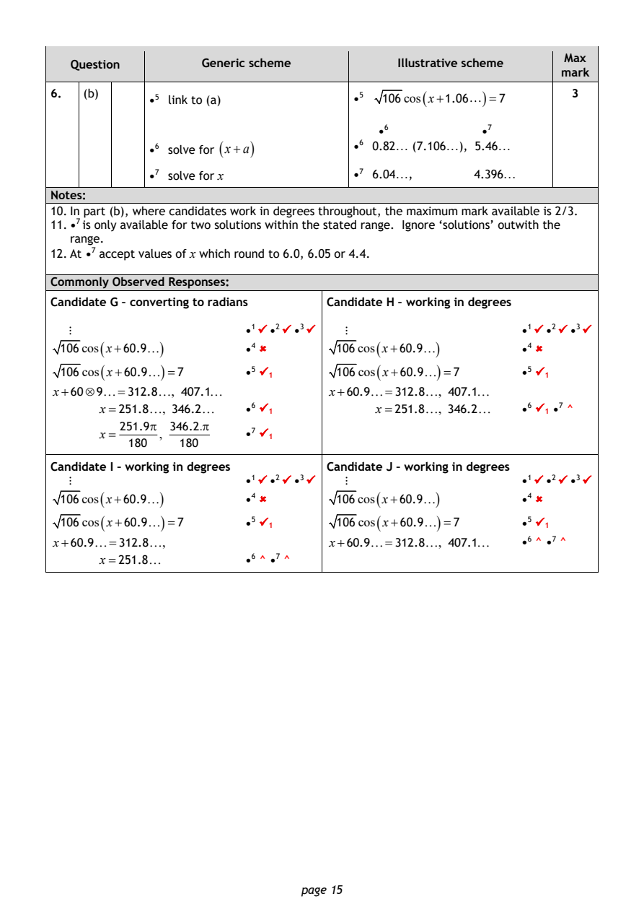
Selectable page text
Max
Question Generic scheme Illustrative scheme
mark
6. (b) •5 link to (a) •5 106cos(x+1.06 )=7 3
•6 •7
•6 solve for (x+a) •6 0.82… (7.106…), 5.46…
•7 solve for x •7 6.04…, 4.396…
Notes:
10. In part (b), where candidates work in degrees throughout, the maximum mark available is 2/3.
11. •⁷ is only available for two solutions within the stated range. Ignore ‘solutions’ outwith the
range.
12. At •⁷ accept values of x which round to 6.0, 6.05 or 4.4.
Commonly Observed Responses:
Candidate G – converting to radians Candidate H – working in degrees
⋮ •1 ✓ •2 ✓ •3 ✓ ⋮ •1 ✓ •2 ✓ •3 ✓
106cos(x+60.9…) •4 106cos(x+60.9…) •4
106cos(x+60.9…)=7 •5 ✓ 106cos(x+60.9…)=7 •5 ✓
1 1
x+60⊗9…=312.8…, 407.1… x+60.9…=312.8…, 407.1…
x=251.8…, 346.2… •6 ✓ x=251.8…, 346.2… •6 ✓ •7 ^
1 1
251.9π 346.2.π
x= , •7 ✓
1
180 180
Candidate I – working in degrees Candidate J – working in degrees ₁
⋮ •1 ✓ •2 ✓ •3 ✓ ⋮ • ✓ •2 ✓ •3 ✓
106cos(x+60.9…) •4 106cos(x+60.9…) •4
106cos(x+60.9…)=7 •5 ✓ 106cos(x+60.9…)=7 •5 ✓
1 1
x+60.9…=312.8…, x+60.9…=312.8…, 407.1… •6 ^ •7 ^
x=251.8… •6 ^ •7 ^
page 15PDF page 16
Paper 2, Question 7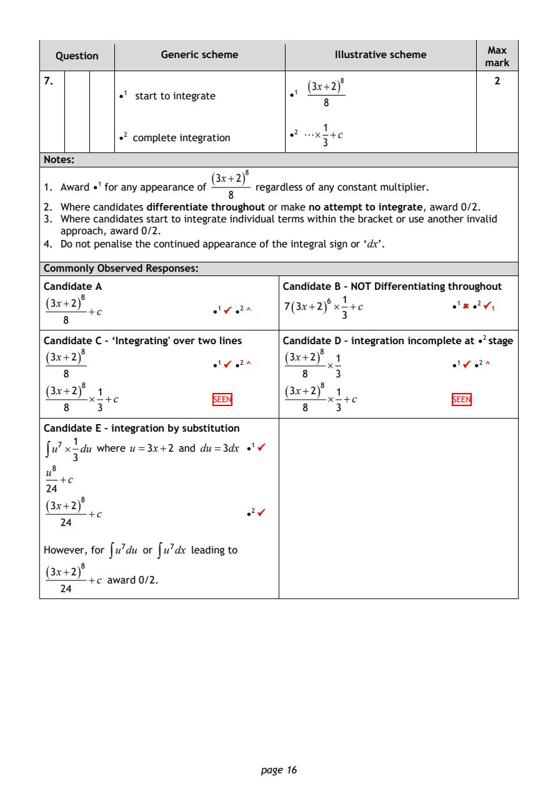
Selectable page text
Max
Question Generic scheme Illustrative scheme
mark
7. (3x+2)⁸ 2
•1 start to integrate •1
8
1
•2 complete integration •2 × +c
3
Notes:
(3x+2)⁸
1. Award •¹ for any appearance of regardless of any constant multiplier.
8
2. Where candidates differentiate throughout or make no attempt to integrate, award 0/2.
3. Where candidates start to integrate individual terms within the bracket or use another invalid
approach, award 0/2.
4. Do not penalise the continued appearance of the integral sign or ‘dx’.
Commonly Observed Responses:
Candidate A Candidate B - NOT Differentiating throughout
(3x+2)⁸
7(3x+2)⁶×
1
+c •1 •2 ✓
+c •1 ✓ •2 ^ 1
3
8
Candidate C – ‘Integrating' over two lines Candidate D – integration incomplete at •² stage
(3x+2)⁸ (3x+2)⁸
1
•1 ✓ •2 ^ × •1 ✓ •2 ^
8 8 3
(3x+2)⁸
1
(3x+2)⁸
1
× +c SEEN × +c SEEN
8 3 8 3
Candidate E – integration by substitution
1
∫u⁷× du where u =3x+2 and du =3dx •¹ ✓
3
u⁸
+c
24
(3x+2)⁸
+c •2 ✓
24
However, for ∫u⁷du or ∫u⁷dx leading to
(3x+2)⁸
+c award 0/2.
24
page 16PDF page 17
Paper 2, Question 8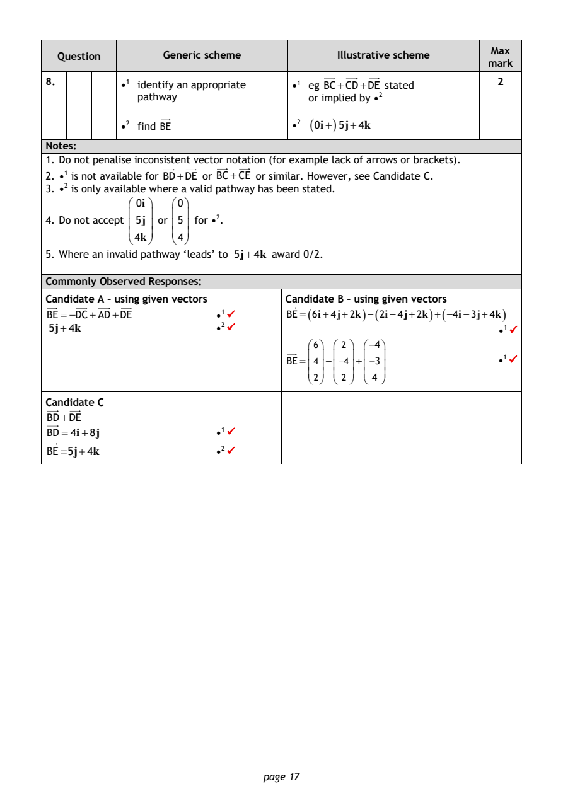
Selectable page text
Max
Question Generic scheme Illustrative scheme
mark
8. •1 identify an appropriate •1 eg BC+CD+DE stated 2
pathway or implied by •²
•2 find BE •2 (0i+)5j+4k
Notes:
1. Do not penalise inconsistent vector notation (for example lack of arrows or brackets).
2. •¹ is not available for BD+DE or BC+CE or similar. However, see Candidate C.
3. •² is only available where a valid pathway has been stated.
0i 0
4. Do not accept 5j or 5 for •².
4k 4
5. Where an invalid pathway ‘leads’ to 5j+4k award 0/2.
Commonly Observed Responses:
Candidate A – using given vectors Candidate B – using given vectors
BE=−DC+AD+DE •1 ✓ BE=(6i+4j+2k)−(2i−4j+2k)+(−4i−3j+4k)
5j+4k •2 ✓ •1 ✓
6 2 −4
BE= 4 − −4 + −3 •1 ✓
2 2 4
Candidate C
BD+DE
BD=4i+8j •1 ✓
BE=5j+4k •2 ✓
page 17PDF page 18
Paper 2, Question 9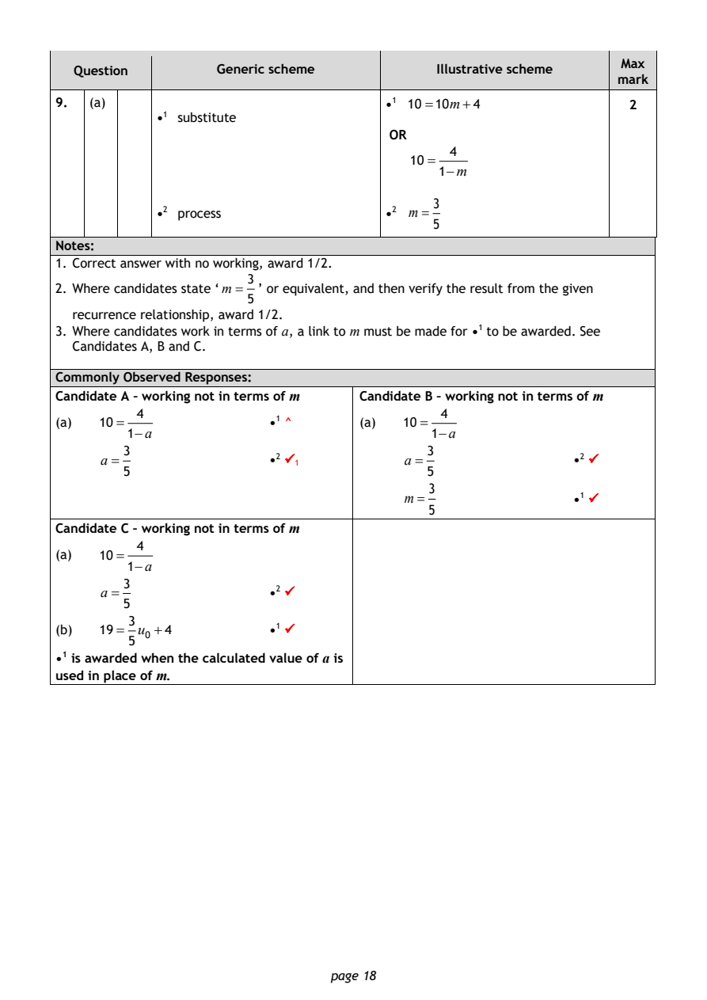
Selectable page text
Max
Question Generic scheme Illustrative scheme
mark
9. (a) •1 10 =10m+4 2
•1 substitute
OR
4
10=
1−m
3
•2 process •2 m=
5
Notes:
1. Correct answer with no working, award 1/2.
3
2. Where candidates state ‘m= ’ or equivalent, and then verify the result from the given
5
recurrence relationship, award 1/2.
3. Where candidates work in terms of a, a link to m must be made for •¹ to be awarded. See
Candidates A, B and C.
Commonly Observed Responses:
Candidate A – working not in terms of m Candidate B – working not in terms of m
4 4
(a) 10= •1 ^ (a) 10=
1−a 1−a
3 3
a= •2 ✓ a= •2 ✓
1
5 5
3
m= •1 ✓
5
Candidate C – working not in terms of m
4
(a) 10=
1−a
3
a= •2 ✓
5
3
(b) 19= u₀ +4 •1 ✓
5
•1 is awarded when the calculated value of a is
used in place of m.
page 18PDF page 19
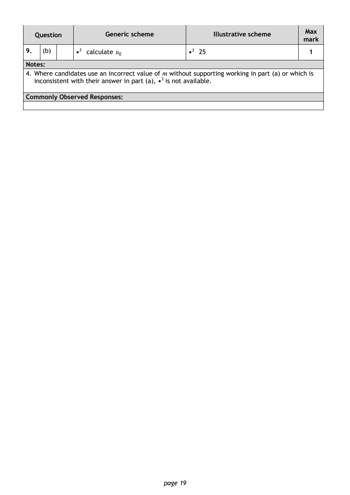
Selectable page text
Max
Question Generic scheme Illustrative scheme
mark
9. (b) •3 calculate u₀ •3 25 1
Notes:
4. Where candidates use an incorrect value of ₃m without supporting working in part (a) or which is
inconsistent with their answer in part (a), • is not available.
Commonly Observed Responses:
page 19PDF page 20
Paper 2, Question 10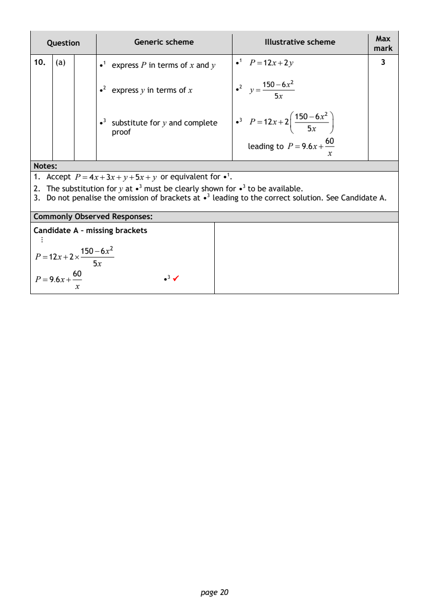
Selectable page text
Max
Question Generic scheme Illustrative scheme
mark
10. (a) •1 express P in terms of x and y •1 P=12x+2y 3
150−6x²
•2 express y in terms of x •2 y =
5x
150−6x²
•3 substitute for y and complete •3 P =12x+2
proof 5x
60
leading to P=9.6x+
x
Notes:
1. Accept P=4x+3x+ y+5x+ y or equivalent for •¹.
2. The substitution for y at •³ must be clearly shown for •³ to be available.
3. Do not penalise the omission of brackets at •³ leading to the correct solution. See Candidate A.
Commonly Observed Responses:
Candidate A – missing brackets
⋮
150−6x²
P=12x+2×
5x
60
P=9.6x+ •3 ✓
x
page 20PDF page 21
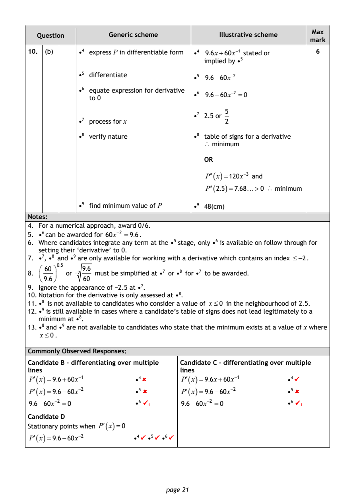
Selectable page text
Max
Question Generic scheme Illustrative scheme
mark
10. (b) •4 express P in differentiable form •4 9.6x+60x⁻¹ stated or 6
implied by •⁵
•5 differentiate
•5 9.6−60x⁻²
•6 equate expression for derivative
•6 9.6−60x⁻² =0
to 0
5
•7 2.5 or
•7 process for x 2
•8 verify nature •8 table of signs for a derivative
∴ minimum
OR
P′′(x)=120x⁻³ and
P′′(2.5)=7.68…>0 ∴ minimum
•9 find minimum value of P •9 48(cm)
Notes:
4. For a numerical approach, award 0/6.
5. •6 can be awarded for 60x⁻² =9.6.
6. Where candidates integrate any term at the •⁵ stage, only •⁶ is available on follow through for
setting their ‘derivative’ to 0.
7. •7, •8 and •⁹ are only available for working with a derivative which contains an index ≤−2.
60 ⁰^{.}⁵ 9.6
8. or ⁻² must be simplified at •⁷ or •⁸ for •⁷ to be awarded.
9.6 60
9. Ignore the appearance of −2.5 at •⁷.
10.Notation for the derivative is only assessed at •⁸.
11.•⁸ is not available to candidates who consider a value of x≤0 in the neighbourhood of 2.5.
12.•⁹ is still available in cases where a candidate’s table of signs does not lead legitimately to a
minimum at •⁸.
13.•⁸ and •⁹ are not available to candidates who state that the minimum exists at a value of x where
x≤0.
Commonly Observed Responses:
Candidate B - differentiating over multiple Candidate C - differentiating over multiple
lines lines
P′(x)=9.6+60x⁻¹ •4 P′(x)=9.6x+60x⁻¹ •4 ✓
P′(x)=9.6−60x⁻² •5 P′(x)=9.6−60x⁻² •5
9.6−60x⁻² =0 •6 ✓ 9.6−60x⁻² =0 •6 ✓
1 1
Candidate D
Stationary points when
P′(x)=0
P′(x)=9.6−60x⁻² •4 ✓ •5 ✓ •6 ✓
page 21PDF page 22
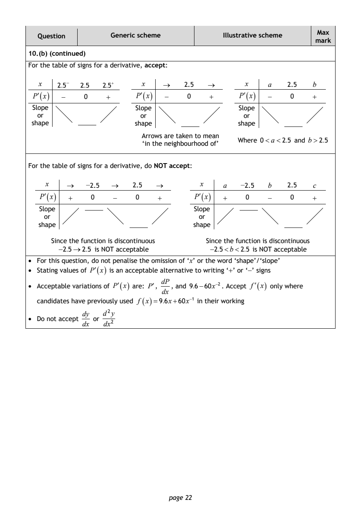
Selectable page text
Max
Question Generic scheme Illustrative scheme
mark
10.(b) (continued)
For the table of signs for a derivative, accept:
x 2.5⁻ 2.5 2.5⁺ x → 2.5 → x a 2.5 b
P′(x)
− 0 +
P′(x)
− 0 +
P′(x)
− 0 +
Slope Slope Slope
or or or
shape shape shape
Arrows are taken to mean
Where 0<a<2.5 and b>2.5
‘in the neighbourhood of’
For the table of signs for a derivative, do NOT accept:
x → −2.5 → 2.5 → x a −2.5 b 2.5 c
P′(x)
+ 0 − 0 +
P′(x)
+ 0 − 0 +
Slope Slope
or or
shape shape
Since the function is discontinuous Since the function is discontinuous
−2.5→2.5 is NOT acceptable −2.5<b<2.5 is NOT acceptable
• For this question, do not penalise the omission of ‘x’ or the word ‘shape’/‘slope’
• Stating values of P′(x) is an acceptable alternative to writing ‘+’ or ‘−’ signs
dP
• Acceptable variations of P′(x) are: P′, , and 9.6−60x⁻². Accept f′(x) only where
dx
candidates have previously used f (x)=9.6x+60x⁻¹ in their working
dy d²y
• Do not accept or
dx dx²
page 22PDF page 23
Paper 2, Question 11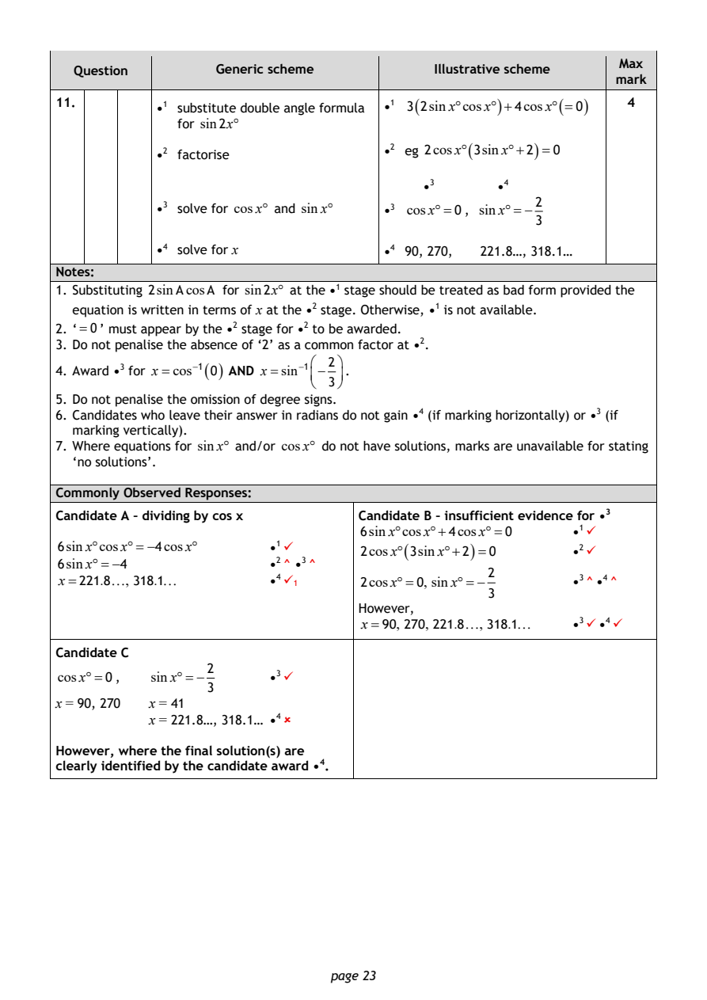
Selectable page text
Max
Question Generic scheme Illustrative scheme
mark
11. •1 substitute double angle formula •1 3(2sinx°cosx°)+4cosx°(=0) 4
for sin2x°
•2 factorise •2 eg 2cosx°(3sinx°+2)=0
•3 •4
2
•3 solve for cosx° and sinx° •3 cosx°=0, sinx°=−
3
•4 solve for x •4 90, 270, 221.8…, 318.1…
Notes:
1. Substituting 2sinAcosA for sin2x° at the •¹ stage should be treated as bad form provided the
equation is written in terms of x at the •² stage. Otherwise, •¹ is not available.
2. ‘=0’ must appear by the •² stage for •² to be awarded.
3. Do not penalise the absence of ‘2’ as a common factor at •².
2
4. Award •³ for x=cos⁻¹(0) AND x=sin⁻¹ − .
3
5. Do not penalise the omission of degree signs.
6. Candidates who leave their answer in radians do not gain •⁴ (if marking horizontally) or •³ (if
marking vertically).
7. Where equations for sinx° and/or cosx° do not have solutions, marks are unavailable for stating
‘no solutions’.
Commonly Observed Responses:
Candidate A – dividing by cos x Candidate B – insufficient evidence for •³
6sinx°cosx°+4cosx°=0 •1 ✓
6sinx°cosx°=−4cosx° •1 ✓ 2cosx°(3sinx°+2)=0 •2 ✓
6sinx°=−4 •2 ^ •3 ^
2
x=221.8…, 318.1… •4 ✓
1
2cosx°=0, sinx°=− •3 ^ •4 ^
3
However,
x=90, 270, 221.8…, 318.1… •3 ✓ •4 ✓
Candidate C
2
cosx°=0, sinx°=− •3 ✓
3
x = 90, 270 x = 41
x = 221.8…, 318.1… •4
However, where the final solution(s) are
clearly identified by the candidate award •⁴.
page 23PDF page 24
Paper 2, Question 12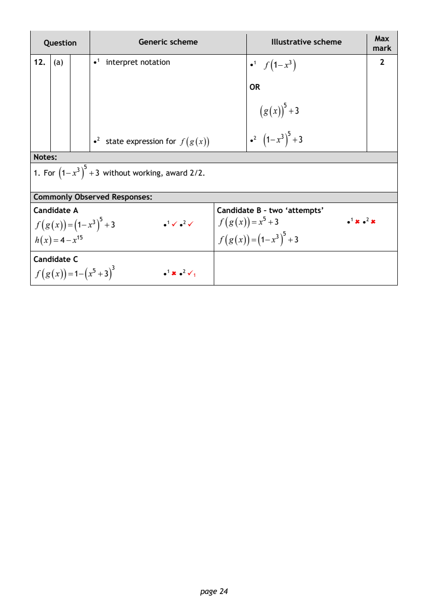
Selectable page text
Max
Question Generic scheme Illustrative scheme
mark
12. (a) •1 interpret notation •1 f ( 1−x³ ) 2
OR
( g(x))
⁵+3
( )
•2 state expression for f ( g(x)) •2 1−x³ ⁵+3
Notes:
( )
1. For 1−x³ ⁵ +3 without working, award 2/2.
Commonly Observed Responses:
Candidate A Candidate B – two ‘attempts’
f ( g(x)) = ( 1−x³ ) ⁵+3 •1 ✓ •2 ✓ f ( g(x)) = x⁵ +3 •1 •2
h(x)=4−x¹⁵ f ( g(x)) = ( 1−x³ ) ⁵+3
Candidate C
f ( g(x)) =1− ( x⁵ +3 ) ³ •1 •2 ✓
1
page 24PDF page 25
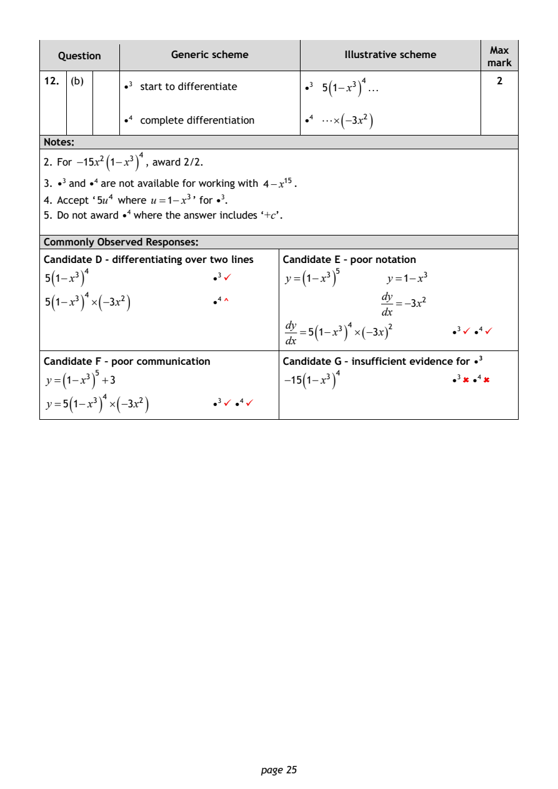
Selectable page text
Max
Question Generic scheme Illustrative scheme
mark
12. (b) •3 start to differentiate •3 5 ( 1−x³ ) ⁴ 2
( )
•4 complete differentiation •4 × −3x²
Notes:
( )
2. For −15x² 1−x³ ⁴, award 2/2.
3. •³ and •⁴ are not available for working with 4−x¹⁵.
4. Accept ‘5u⁴ where u =1−x³’ for •³.
5. Do not award •⁴ where the answer includes ‘+c’.
Commonly Observed Responses:
Candidate D - differentiating over two lines Candidate E – poor notation
( ) ( )
5 1−x³ ⁴ •3 ✓ y = 1−x³ ⁵ y=1−x³
( ) ( ) dy
5 1−x³ ⁴× −3x² •4 ^ =−3x²
dx
dy
=5 ( 1−x³ ) ⁴×(−3x)² •3 ✓ •4 ✓
dx
Candidate F – poor communication Candidate G – insufficient evidence for •³
( ) ( )
y= 1−x³ ⁵+3 −15 1−x³ ⁴ •3 •4
( ) ( )
y =5 1−x³ ⁴× −3x² •3 ✓ •4 ✓
page 25PDF page 26
Paper 2, Question 13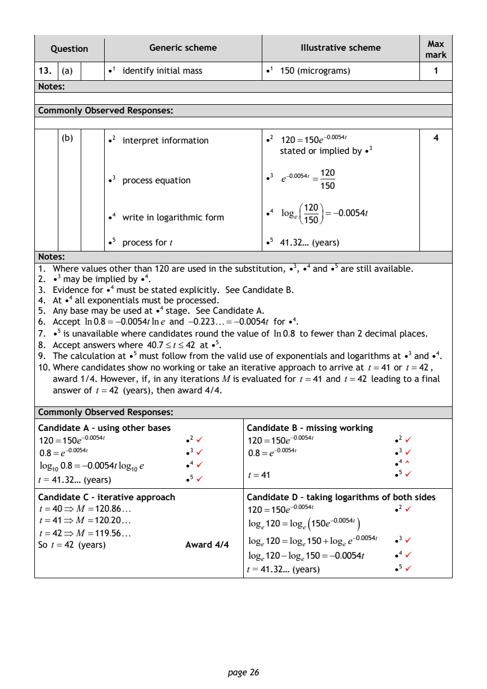
Selectable page text
Max
Question Generic scheme Illustrative scheme
mark
13. (a) •1 identify initial mass •1 150 (micrograms) 1
Notes:
Commonly Observed Responses:
(b) •2 interpret information •2 120=150e⁻⁰^{.}⁰⁰⁵4t 4
stated or implied by •³
120
•3 process equation •3 e⁻⁰^{.}⁰⁰⁵4t =
150
120
•4 write in logarithmic form
•4 logₑ
=−0.0054t
150
•5 process for t •5 41.32… (years)
Notes:
1. Where values other than 120 are used in the substitution, •³, •4 and •⁵ are still available.
2. •3 may be implied by •⁴.
3. Evidence for •⁴ must be stated explicitly. See Candidate B.
4. At •⁴ all exponentials must be processed.
5. Any base may be used at •⁴ stage. See Candidate A.
6. Accept ln0.8=−0.0054tlne and −0.223…=−0.0054t for •⁴.
7. •5 is unavailable where candidates round the value of ln0.8 to fewer than 2 decimal places.
8. Accept answers where 40.7≤t ≤42 at •⁵.
9. The calculation at •⁵ must follow from the valid use of exponentials and logarithms at •³ and •⁴.
10. Where candidates show no working or take an iterative approach to arrive at t =41 or t =42,
award 1/4. However, if, in any iterations M is evaluated for t =41 and t =42 leading to a final
answer of t =42 (years), then award 4/4.
Commonly Observed Responses:
Candidate A – using other bases Candidate B – missing working
120=150e⁻⁰^{.}⁰⁰⁵4t •2 ✓ 120=150e⁻⁰^{.}⁰⁰⁵4t •2 ✓
0.8=e⁻⁰^{.}⁰⁰⁵4t •3 ✓ 0.8=e⁻⁰^{.}⁰⁰⁵4t •3 ✓
log₁₀0.8=−0.0054tlog₁₀e •4 ✓ •4 ^
t =41 •5 ✓
t = 41.32… (years) •5 ✓
Candidate C – iterative approach Candidate D – taking logarithms of both sides
t =40⇒M =120.86… 120=150e⁻⁰^{.}⁰⁰⁵4t •2 ✓
t =41⇒M =120.20…
logₑ120=logₑ
( 150e⁻⁰^{.}⁰⁰54t)
t =42⇒M =119.56…
logₑ120=logₑ150+logₑe⁻⁰^{.}⁰⁰54t •3 ✓
So t =42 (years) Award 4/4
logₑ120−logₑ150=−0.0054t •4 ✓
t = 41.32… (years) •5 ✓
page 26PDF page 27
Paper 2, Question 14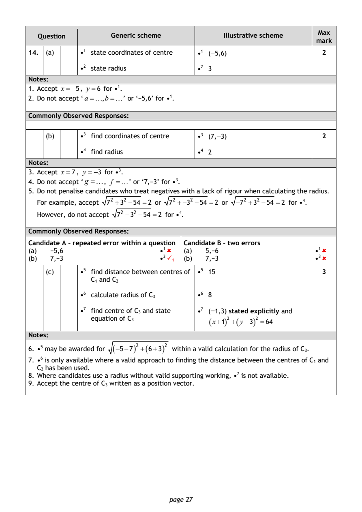
Selectable page text
Max
Question Generic scheme Illustrative scheme
mark
14. (a) •1 state coordinates of centre •1 (−5,6) 2
•2 state radius •2 3
Notes:
1. Accept x=−5, y =6 for •¹.
2. Do not accept ‘a=…,b=…’ or ‘−5,6’ for •¹.
Commonly Observed Responses:
(b) •3 find coordinates of centre •3 (7,−3) 2
•4 find radius •4 2
Notes:
3. Accept x=7, y =−3 for •³.
4. Do not accept ‘g =…, f =…’ or ‘7,−3’ for •³.
5. Do not penalise candidates who treat negatives with a lack of rigour when calculating the radius.
For example, accept 7² +3² −54 =2 or 7² +−3² −54 =2 or −7² +3² −54 =2 for •⁴.
However, do not accept 7² −3² −54 =2 for •⁴.
Commonly Observed Responses:
Candidate A – repeated error within a quest₁ion Candidate B – two errors
(a) −5,6 • (a) 5,−6 •1
(b) 7,−3 •3 ✓ (b) 7,−3 •3
1
(c) •5 find distance between centres of •⁵ 15 3
C and C
1 2
•6 calculate radius of C •6 8
3
•7 find centre of C and state •7 (−1,3) stated explicitly and
equation of C ³
3 (x+1)² +(y−3)² =64
Notes:
6. •⁵ may be awarded for (−5−7)² +(6+3)² within a valid calculation for the radius of C .
3
7. •⁶ is only available where a valid approach to finding the distance between the centres of C and
1
C has been used.
8. W²here candidates use a radius without valid supporting working, •⁷ is not available.
9. Accept the centre of C written as a position vector.
3
page 27PDF page 28
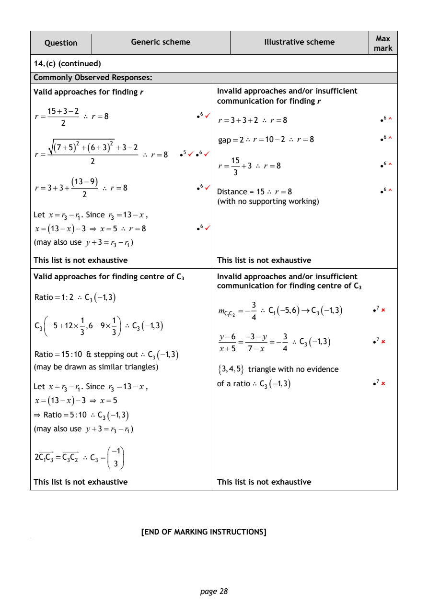
Selectable page text
Max
Question Generic scheme Illustrative scheme
mark
14.(c) (continued)
Commonly Observed Responses:
Valid approaches for finding r Invalid approaches and/or insufficient
communication for finding r
15+3−2
r = ∴ r =8 •6 ✓
r =3+3+2 ∴ r =8 •6 ^
2
gap=2∴ r =10−2 ∴ r =8 •6 ^
(7+5)² +(6+3)² +3−2
r = ∴ r =8 •5 ✓ •6 ✓
2 15
r = +3 ∴ r =8 •6 ^
3
(13−9)
r =3+3+ ∴ r =8 •6 ✓
Distance = 15 ∴ r =8 •6 ^
2
(with no supporting working)
Let x=r₃−r₁. Since r₃ =13−x,
x=(13−x)−3 ⇒ x=5 ∴ r =8 •6 ✓
(may also use y+3=r₃ −r₁)
This list is not exhaustive This list is not exhaustive
Valid approaches for finding centre of C Invalid approaches and/or insufficient
3
communication for finding centre of C
3
Ratio=1:2 ∴ C₃(−1,3)
3
m_{C}_{C} =− ∴ C₁(−5,6)→C₃(−1,3) •7
₁ ₂
4
1 1
C₃ −5+12× ,6−9× ∴ C₃(−1,3)
3 3
y−6 −3− y 3
= =− ∴ C₃(−1,3) •7
x+5 7−x 4
Ratio=15:10 & stepping out ∴ C₃(−1,3)
(may be drawn as similar triangles) {3,4,5} triangle with no evidence
of a ratio ∴ C₃(−1,3) •7
Let x=r₃−r₁. Since r₃ =13−x,
x=(13−x)−3 ⇒ x=5
⇒ Ratio=5:10 ∴ C₃(−1,3)
(may also use y+3=r₃ −r₁)
−1
2C₁C₃ =C₃C₂ ∴ C₃ =
3
This list is not exhaustive This list is not exhaustive
[END OF MARKING INSTRUCTIONS]
s
page 28